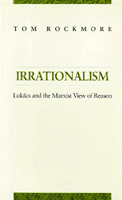

<body bgcolor="#FFFFFF" text="#000000" link="#0000FF" vlink="#CC0000" alink="#CC0000"><center><hr width="350" size="1" align="center" noshade>First English edition of a strictly philosophical discussion of Georg Luk�cs's Marxist phase<hr width="350" size="1" align="center" noshade><p><a href="https://cdcshoppingcart.uchicago.edu/Cart/ChicagoBook.aspx?ISBN=9780877228677&&PRESS=temple" target="_top">Buy this book!</a> | <a href="https://cdcshoppingcart.uchicago.edu/Cart/Cart.aspx?PRESS=temple" target="_top">View Cart</a> | <a href="https://cdcshoppingcart.uchicago.edu/Cart/Cart.aspx?PRESS=temple" target="_top">Check Out</a></p><p></p></center><!--none//--><h1>Irrationalism</h1>
<H2>Lukacs and the Marxist View of Reason</H2>
<h3>Tom Rockmore</h3>
<P>cloth 0-87722-867-1 $84.50, Dec 91, <FONT COLOR=#990033>Out of Print</FONT>
<br>Electronic Book 1-43990-451-0 $85.50 <FONT COLOR=#990033>Out of Print</FONT>
<BR> 288 pp
</P><BLOCKQUOTE><I>"This book will be a major contribution to the understanding of Marxism not as a political blueprint or merely social theory but as a modern way to cope with the deeply threatening cloud of Unreason in human affairs and in human understanding. Rockmore gives interesting readings of the two peaks of Luk�cs's Marxist thought. This is one of the few attempts at an interpretation and an evaluation of Luk�cs after his turn to Marx after 1918. And it is noteworthy too for Rockmore's severe rejections of much of Luk�cs's writings within his equally clear admiration for the man's intelligence, scholarship, and creative philosophical insights."</I>
<br>&#151<b>Robert S. Cohen</b>, Professor of Physics and Philosophy, Boston University<I></I></BLOCKQUOTE>
<p>This is the first detailed study, following the recent collapse of political Marxism in Eastern Europe, of twentieth-century Hungarian philosopher Georg Luk�cs and his position as the leading proponent of the Marxist theory of reason. Luk�cs's <I>History and Class Consciousness</I> has been called one of the three most influential philosophical works of this century, and he, the outstanding Marxist philosopher. Marxism has long suffered relative neglect in philosophical discussion as a result of its own invidious distinction between itself and the supposed irrationality of what it regards as bourgeois philosophy.
<p>Tom Rockmore offers a uniquely detailed philosophical analysis of Luk�cs's entire position as a theory of reason, based on the distinction between reason and unreason, or irrationalism. The author gives special emphasis to Luk�cs's connection to German neo-Kantianism, particularly Lask, and on his last, unfinished work.
<p>Rockmore begins with an account of the roots of Luk�cs's Marxism, followed by an in-depth analysis of his often mentioned, but still incompletely understood, seminal essay "Reification and the Class Consciousness of the Proletariat." He then traces the evolution and later demise of the distinction between reason and irrationalism in Luk�cs's final thought. The author thus makes available for the first time in English a strictly philosophical discussion of Georg Luk�cs's Marxist phase and brings consideration of his thought into the wider philosophical discussion.
<BR>&nbsp;<h2>Contents</h2><P>
<p>Introduction: Irrationalism: Luk�cs and the Marxist View of Reason
<br>1. Marx on Philosophy and Ideology
<br>2. Philosophy and Science, Ideology and Truth
<br>3. Epistemological Irrationality
<br>4. Marxian Economics and Neo-Kantian Philosophy
<br>5. The Antinomies of Bourgeois Thought
<br>6. The Standpoint of the Proletariat
<br>7. Hegel's Objective Idealism and Dialectical Materialism
<br>8. Philosophical and Political Irrationalism
<br>9. Luk�cs's Social Ontology
<br>Conclusion: A Marxist View of Reason?
<br>Notes
<br>Index
</P><BR>&nbsp;<H2>About the Author(s)</H2>
<P><b>Tom Rockmore</b> is Professor of Philosophy at Duquesne University.</P>
<BR><H2>Subject Categories</H2>
<p><A HREF="/tempress/philosophy.html" TARGET="_top">Philosophy and Ethics</a>
</p>
<p align="center"><a href="https://cdcshoppingcart.uchicago.edu/Cart/ChicagoBook.aspx?ISBN=9780877228677&&PRESS=temple" target="_top">Buy this book!</a> | <a href="https://cdcshoppingcart.uchicago.edu/Cart/Cart.aspx?PRESS=temple" target="_top">View Cart</a> | <a href="https://cdcshoppingcart.uchicago.edu/Cart/Cart.aspx?PRESS=temple" target="_top">Check Out</a></p><p><font face="Arial" size="1"><a href="copyright.html" onMouseOver="window.status='Web Copyright Policy';return true;" onMouseOut="window.status=''" title="Web Copyright Policy">&copy;</a> 2015 <a href="http://www.temple.edu" target="new" onMouseOver="window.status='Link to Temple University home page';return true;" onMouseOut="window.status=''" title="Link to Temple University home page">Temple University</a>. All Rights Reserved. http://www.temple.edu/tempress/titles/780_reg.html</font></p>